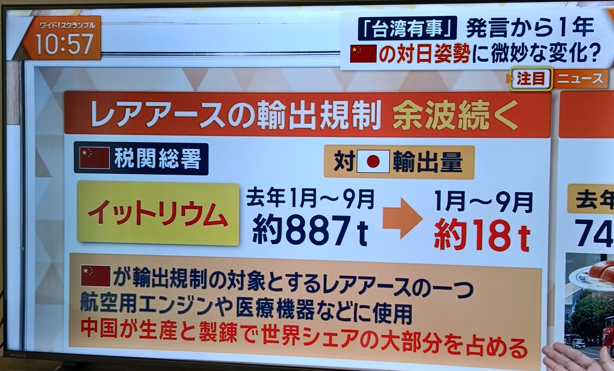
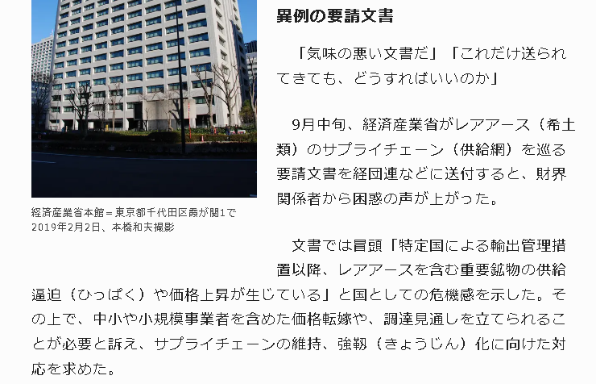

일본의 다카이치가 중국 상대로 씨발놈아! 하고 외치는 외교 정책을 펼치자
중국은 일본 상대로 무역 보복 조치를 취했다.
그 결과, 일본으로 수출되던 희토류 양이 극적으로 줄어들었다.
한 예로 일본으로 수출되던 이트륨 양이 작년 887톤에서
올해 18톤으로 줄어든 상황.

https://mainichi.jp/articles/20261106/k00/00m/020/290000c
이에 일본 정부는 중국의 희토류 수출 통제 문제는
정부 측에서 해결할 수 없다며 포기를 선언.
일본 민간 기업들에게 스스로 다른 나라에서 수입을 하든
가격 전환하든 알아서 하라고 통지했다.
저능아 틀딱들은 중국이랑 전젱 해야한다던데
뭐지 일봉 ㅈ털리고잇엇노 ㅋㅋ